A timelapse of Las Vegas in the evening. What a pretty sight!A beautiful view of Las Vegas. The lights are twinkling through the night.
Geographical Location
Geographical Location: North America
This city is in North America. It is located in the United States
of America, and it is in the state of Nevada.
This city is known for it's casinos and it's nightlife.
Photo Gallery
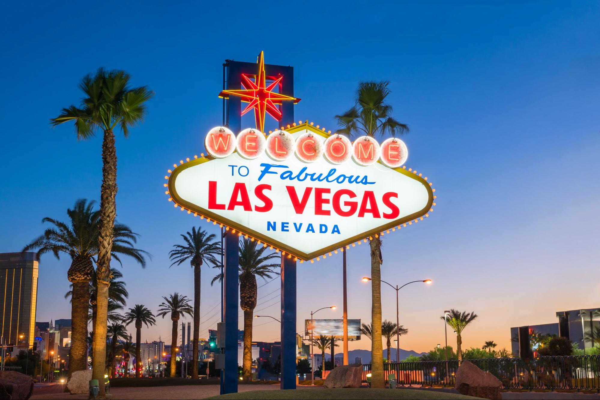
The iconic Las Vegas sign.
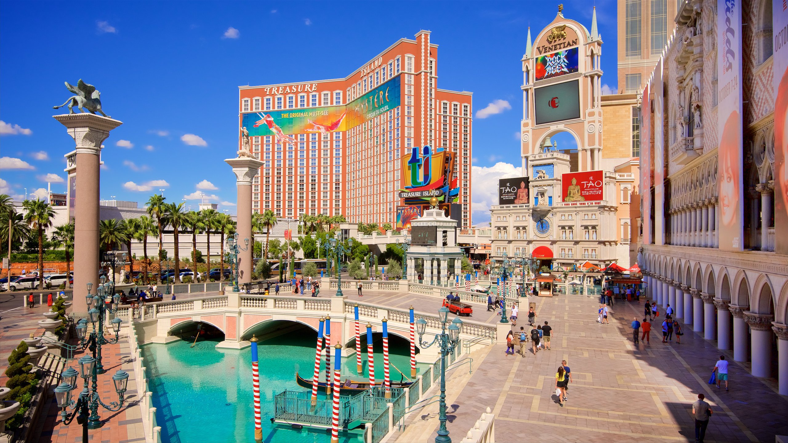
Las Vegas has many places to walk around and shop around.Las Vegas also has gondolas that you can ride!
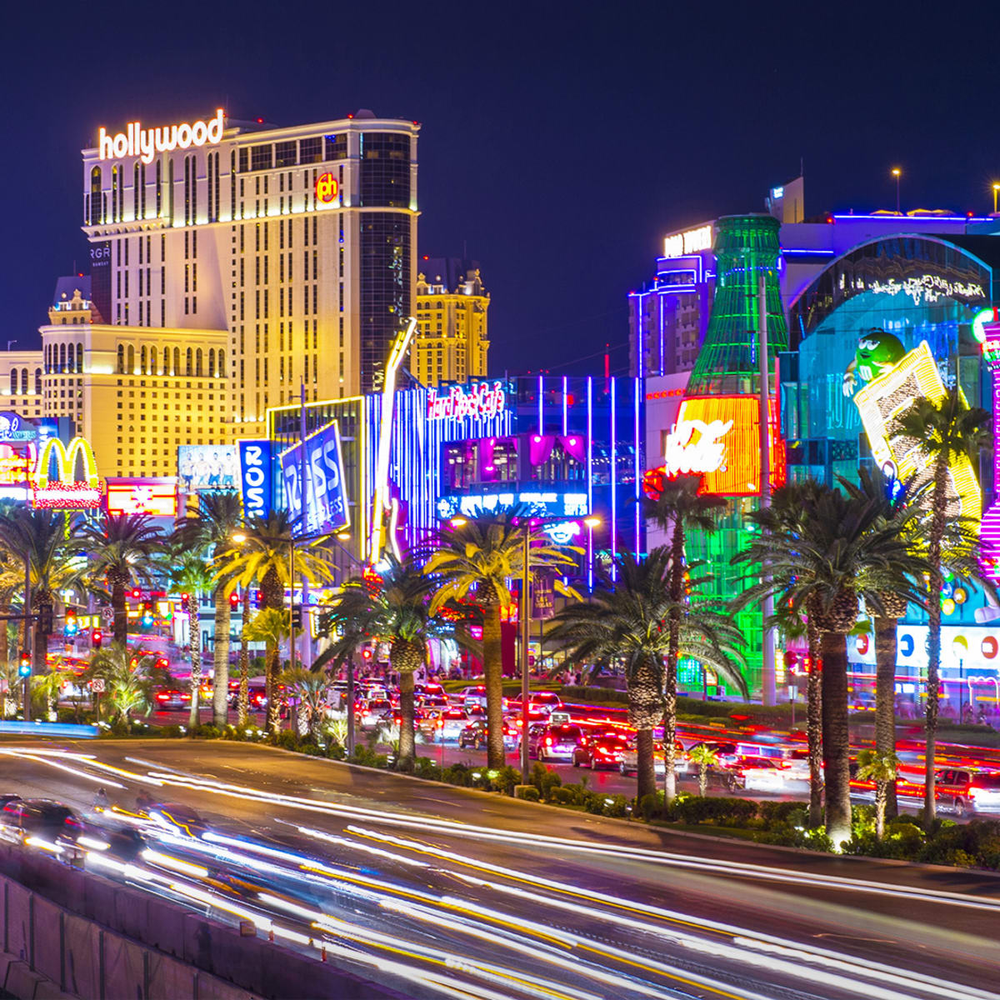
The neon lights are so bright and colorful!You can see the Effiel Tower replica and the ferris wheel from this view!
Hue
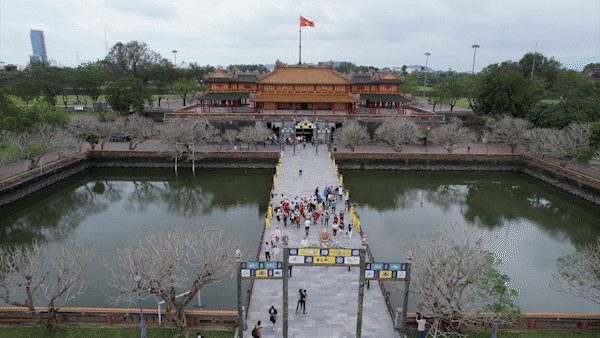
One of the biggest attractions of Hue is the Imperial City.
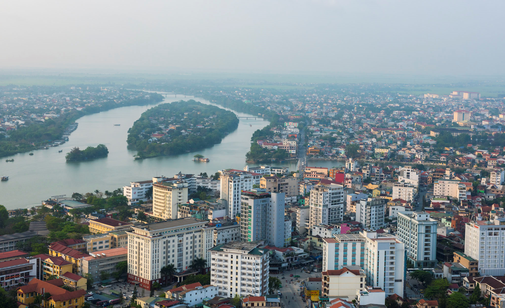
While Hue is known for their large countryside, it also has large cities as well.
Geographical Location
Geographical Location: Asia
This city is in Asia. It is located in Vietnam,
and it is located near the center of the country.
This is where my parents are from.
Photo Gallery
This is the Gate of Manifest Benevolence.
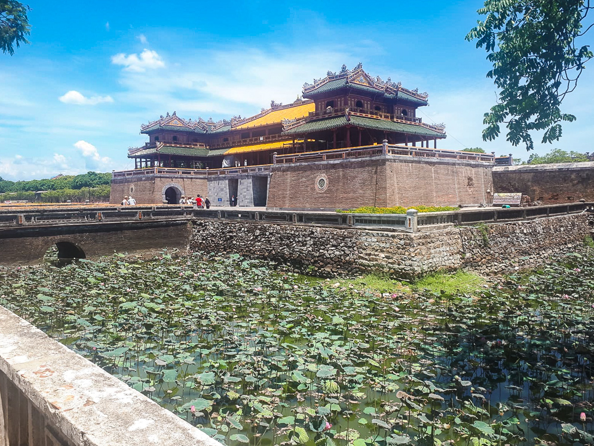
The lotus blooms so beautifully, complementing the beautiful city.
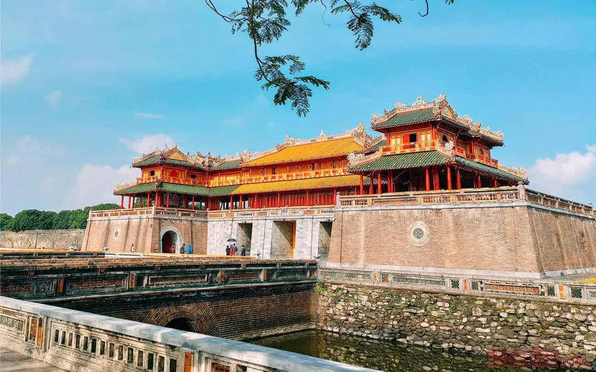
The Imperial City is also known as Hue Citadel and Imperial Citadel, and has a lot of cool architecture!
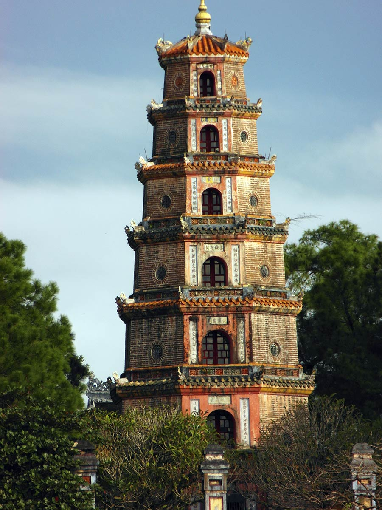
This is the Thien Mu Pagoda, also known as Lady Pagoda in Hue
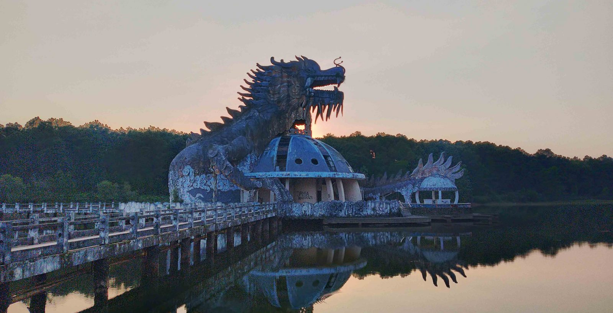
This is the Abandoned Water Park, it is no longer functioning, but it is a cool landmark.
Detroit
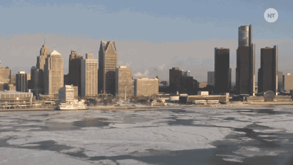
The city of Detroit sits by a lake.
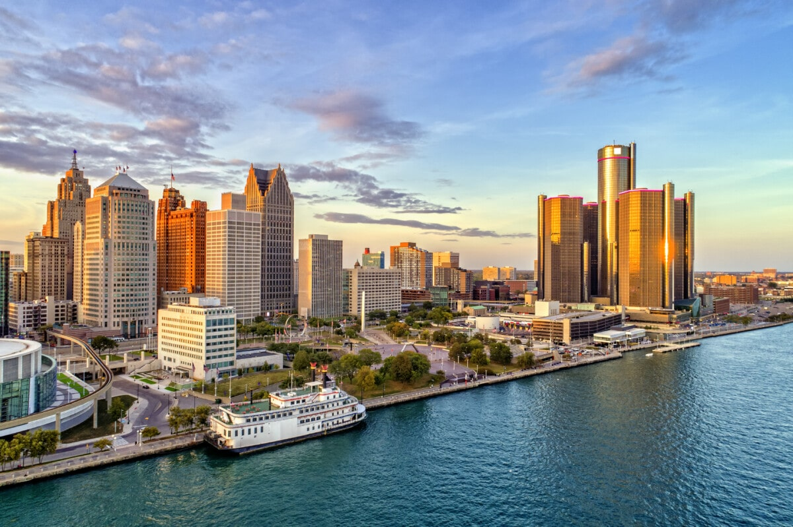
A sunset covering the buildings of the city by a lake is a sight to see!
Geographical Location
Geographical Location: North America
This city is in North America. It is located in the United States
of America, and it is in the state of Michigan.
This is a well-know city in Michigan. I have family living in Detroit.
Photo Gallery
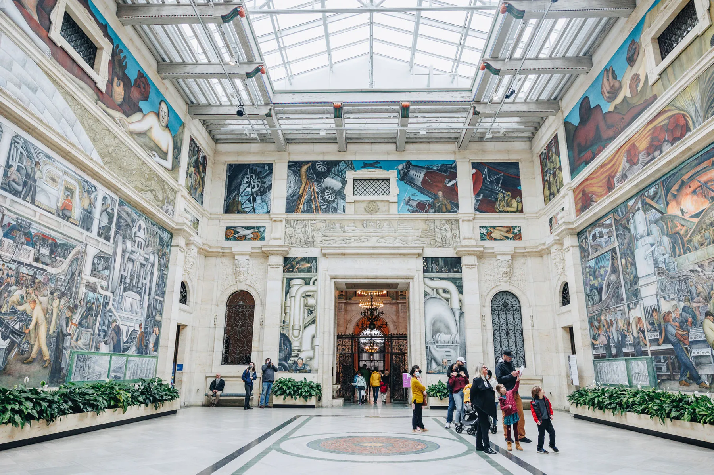
I love the murals in the Detroit Art Institute!
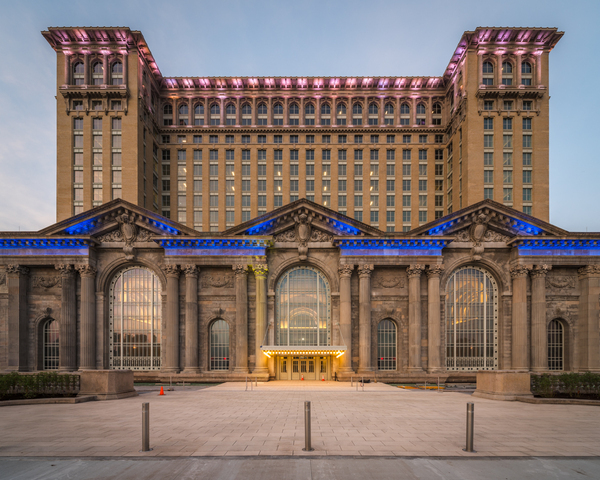
Detroit has so many historical buildings, such as the Detroit Central Station.There's so many places to learn too; the Anna Scripps Whitcomb Conservatory has so many plants!Do you like watching plays? Maybe come to the Detroit Fox Theater!
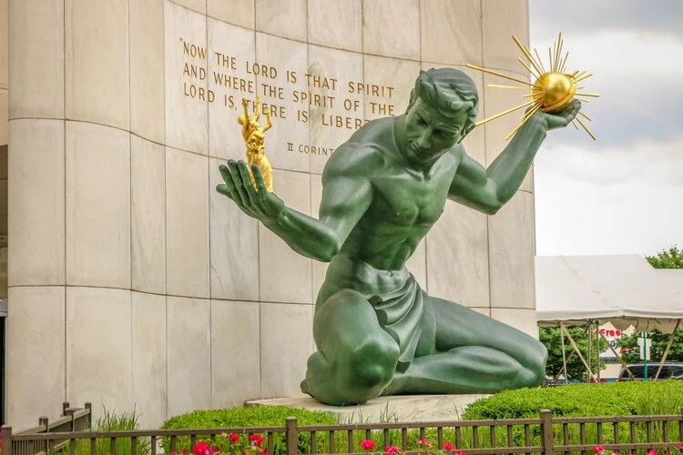
There are so many cool statues as well!